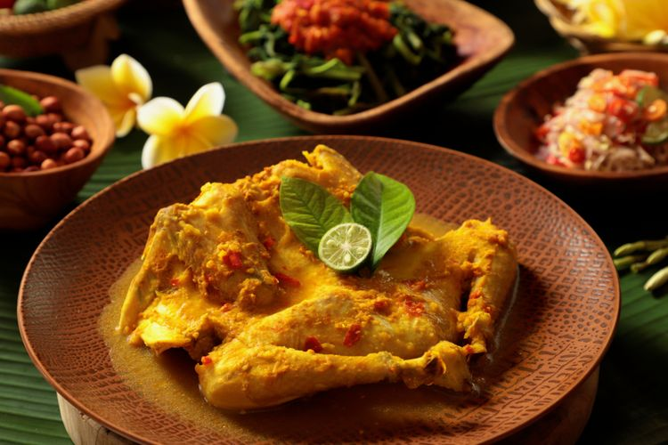

Bebek Betutu Recipe

Bebek Betutu is a traditional Balinese food. It is made of ducks wrapped inside areca palm fronds, then it is cooked by burying it with coal inside a hole.
Ingredients
- 1/2 Duck (thigh)
- Fried red onion
- fried nuts
- cassava leafs (boiled)
- 2 red onions
- 1 tbs chopped lemongrass
- 1/2 tsp roasted shrimp paste
- 1 tsp chopped kecombrang
- 1 tsp lime juice
- 2 lime leafs
- banana leafs
- coconut oil
- salt, pepper, and sugar
Ground Spices Ingredients (Base Gedhe, Balinese spices ingredients)
- 4 red onions
- 3 garlics
- 2 red chili
- 2 cayenne pepper
- lime leaf
- 2 cm ginger
- 2 cm tumeric
- 2 cm galangal
- 1 tsp coriander
- 3 candlenuts
- 2 tsp shrimp paste
- coconut oil
Steps
- Blend all the ground spices except lime leaves, mix well and saute until cooked, set aside
- make the chili sauce, slice the shallots, chilies, lemongrass stalks, lime leaves, and add the shrimp paste, stir well, pour in the lime juice
- Prepare banana leaves that have been heated on the stove so they don't become stiff, mix the boiled cassava leaves with the base
- Brush the duck with lemon juice and season with salt and pepper to taste. Then rub with Base Gedhe seasoning evenly over all surfaces of the duck. Place it on cassava leaves, then wrap it folded using banana leaves
- prepare the steamer. Place the duck wrapped in banana leaves, fill with water until it covers the surface of the duck package, cook until cooked. Occasionally you have to check the water, add water if it starts to decrease
- For curry sauce, heat oil, take 2 tablespoons Base Gedhe, add coconut milk, season, cook until cooked, strain, set aside
- Take the duck and cassava leaves. add sambal matah on top of the cassava. pour in the curry sauce
- Finished!